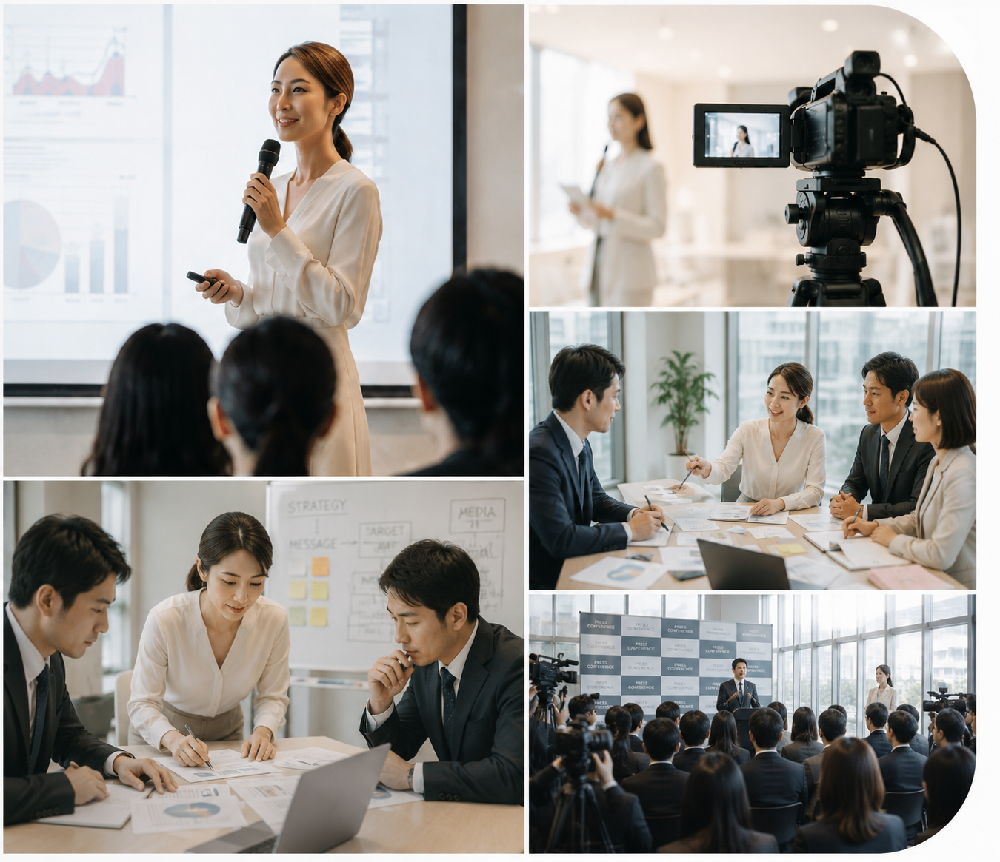
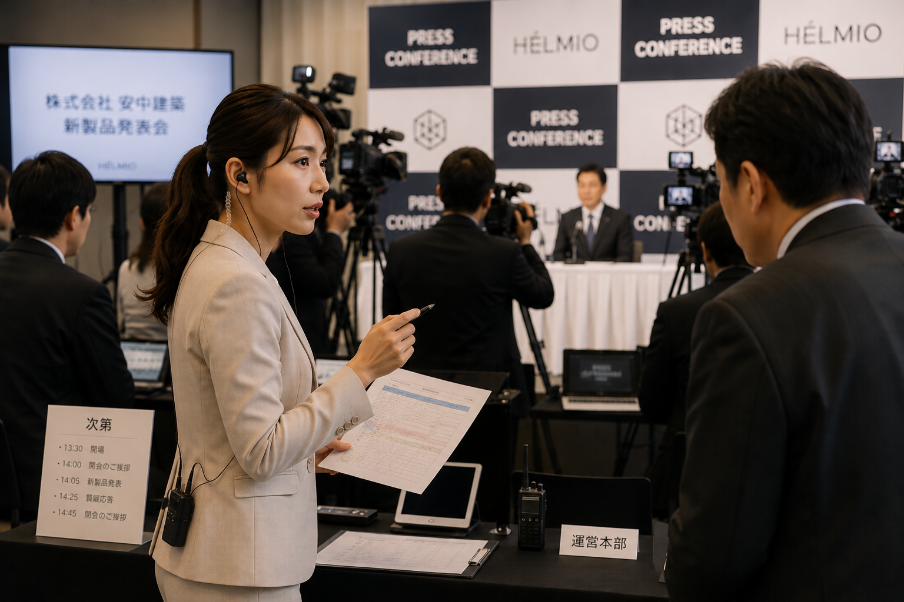
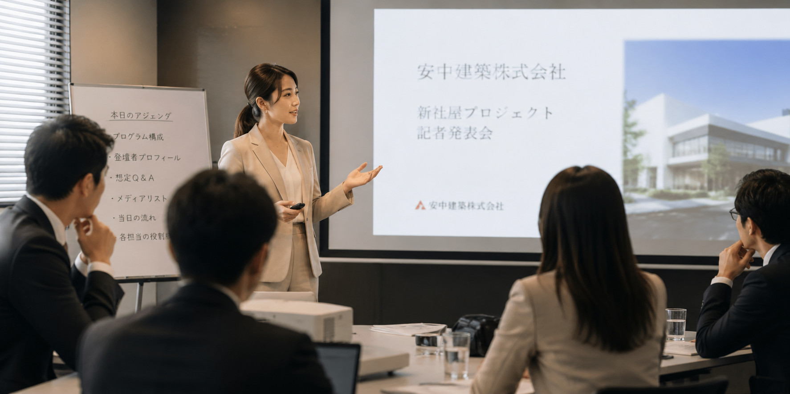
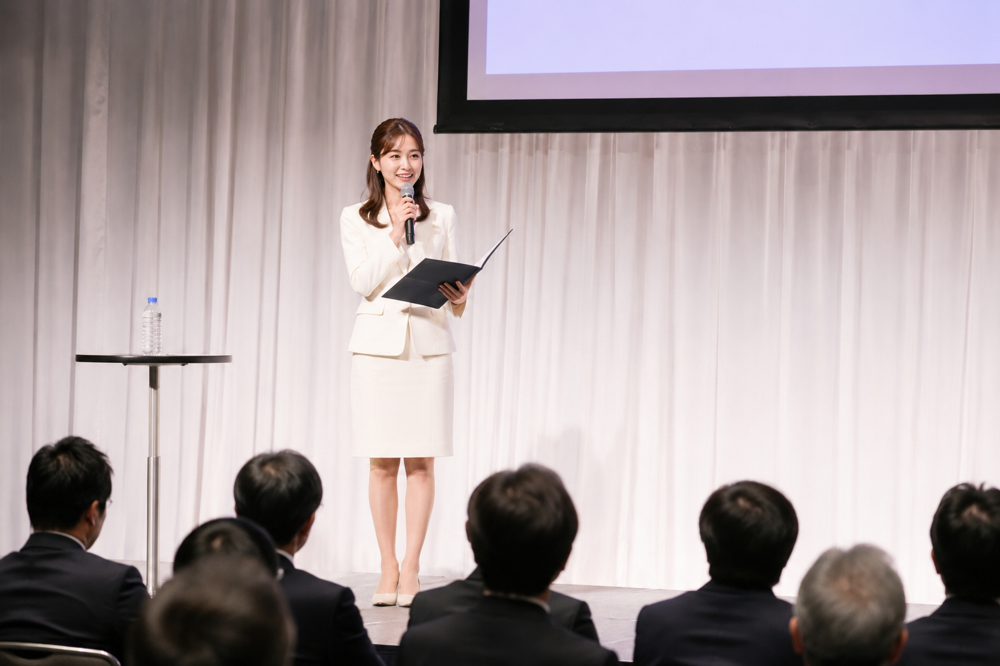
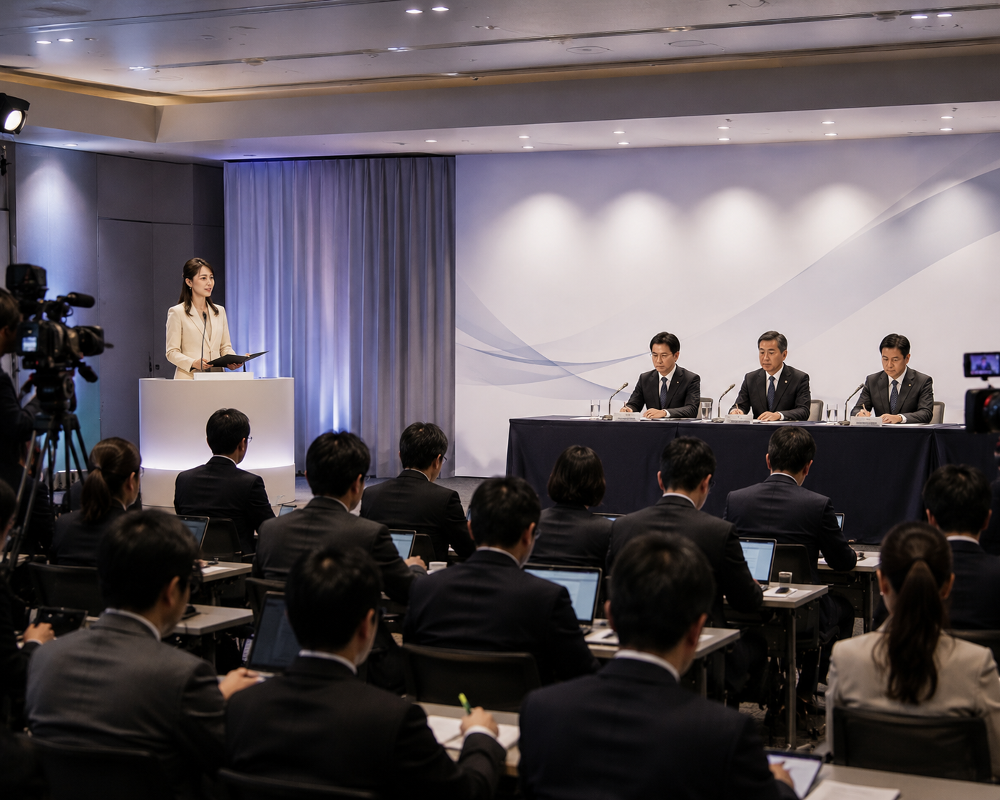
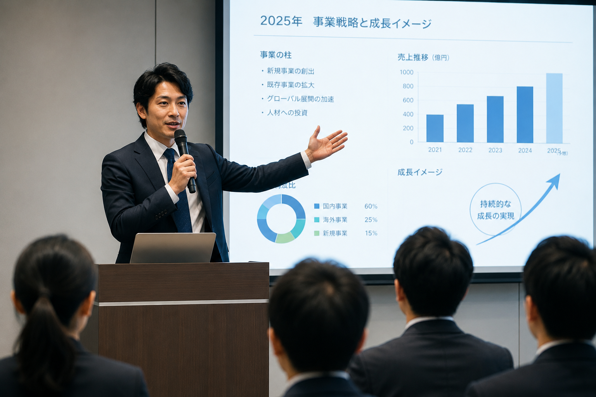

Speech Training
2024年 総裁選候補者
スピーチレッスン・表現指導
Corporate Communication & Casting
企業コミュニケーション支援、PR、スピーチ・プレゼンテーション、
イベント企画運営、映像制作まで、
企業やブランドの価値を届けるためのコミュニケーションを
一貫して支援します。

SELECTED EXPERIENCE
代表および所属・提携プロフェッショナルが、 これまでに携わった実績の一部です。
01
Speech Training
スピーチレッスン・表現指導
Presentation Support
プレゼンテーション支援
Pitch Event
ピッチコンテスト・ステージ進行
Executive Seminar
大企業経営層・人事担当者向けセミナー
02
News & Sports
ニュース・スポーツ・報道キャスター
News Program
ニュースキャスター
Field Reporting
「ブルーエコノミー」リポーター
TV & Commercial
キャスター・リポーター・出演
03
Expo 2025
BLUE OCEAN DOME・世界海の日イベント
Sports Awards
2023–2025 公式MC・会場進行
Technology Conference
2024・2025 オンライン配信MC
Mobility Event
主催者ステージMC・ナレーター
※掲載内容は、代表および所属・提携プロフェッショナル 個人の活動実績を含みます。
COMMUNICATION PARTNER
展示会、新商品の発表会、 経営者プレゼンテーション、 記者発表、企業PR。 「伝えたいこと」はあるのに、 どう伝えれば成果につながるのか分からない。
そんな場面で、HÉLMIOは必要なタイミングだけ、 企業のコミュニケーションパートナーとして参加します。 局アナ・女優・報道経験者など、 第一線で「伝える」を仕事にしてきた プロフェッショナルが、 誰に、何を、どう伝えるかを整理し、 企画からキャスティング、 プレゼンテーション、イベント運営、 PRまで伴走します。
必要なところだけでも。
プロジェクト全体でも。
SERVICE
必要なのは、 ただ人を手配することではなく、 企業の魅力が伝わる設計です。
テレビ、報道、舞台、企業イベントなど、 実際の現場で「伝える」ことを仕事にしてきた プロフェッショナルが在籍しています。
話し方だけではなく、 伝わる構成、表現、見せ方まで支援。 重要な場面で成果につながる スピーチをサポートします。

テレビ局・報道経験を活かし、 企業の魅力やストーリーを整理。 プレスリリース、記者発表、 メディア対応まで支援します。

出演者を紹介して終わりではありません。 企画、構成、演出、プレゼン、PRまで、 企業のメッセージが一貫して伝わるよう サポートします。






カードをクリックすると、 プロフィール・主な経歴・写真・動画をご覧いただけます。
まずは「何を伝えたいか」をお聞かせください。 案件が具体化していない段階からでも ご相談いただけます。
企業やブランドの想い、目的、 ターゲット、ご予算、スケジュールなどを整理し、 最適な方向性を設計します。
必要に応じて、映像・デザイン・イベント運営など、 各分野のパートナーと連携し、 案件ごとに最適なチームを編成します。
キャスティング、台本・構成作成、 進行設計、映像・デザイン制作など、 本番に向けた準備を進めます。
イベント運営、司会、メディア対応まで 一貫してサポート。 終了後の振り返りや改善提案まで伴走します。
FOR CORPORATE CLIENTS
企業PR・キャスティング・展示会・スピーチ・ プレゼンテーションなど、 案件が具体化していない段階からでも ご相談いただけます。